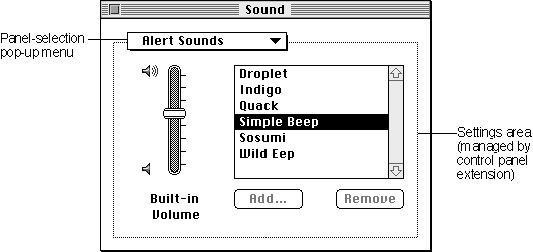
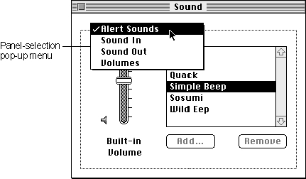

Legacy Document
Important: The information in this document is obsolete and should not be used for new development.
Important: The information in this document is obsolete and should not be used for new development.


About Control Panel Extensions
A control panel manages the settings of a system-wide feature, such as the amount of memory allocated to a disk cache, the speed at which the cursor moves relative to movement of the mouse, the background pattern used on the desktop, or the picture displayed by a screen saver. On the screen, a control panel appears as a modeless dialog box with controls that let users specify basic settings and preferences for the feature. A control panel such as the General Controls or Color control panel usually defines the contents of its display area and manages the settings of its own controls; however, a control panel such as the Sound or Video control panel may use one or more control panel extensions to manage parts of its display area. The rest of this chapter discusses control panels that use control panel extensions and describes how to write a control panel extension. For information on control panels that do not use control panel extensions, see the chapter "Control Panels" in Inside Macintosh: More Macintosh Toolbox.A control panel extension works in conjunction with and at the request of a control panel to manage a certain part of the control panel's display area. The area managed by a control panel extension is called a panel. A panel contains controls and other items related to the features managed by the control panel extension. These items are the same items used in dialog and alert boxes. The control panel extension is responsible for handling events in its panel and for responding to requests from its associated control panel. A control panel that uses control panel extensions typically includes a pop-up menu, from which the user chooses which panel to view. The control panel displays the current panel's items within a dotted-line border extending from its pop-up menu.
Figure 5-1 shows the Sound control panel introduced with version 3.0 of the Sound Manager. The Sound control panel manages the pop-up menu in its display area. When the user chooses a menu item from the pop-up menu, the Sound control panel uses a control panel extension to display the panel corresponding to the user's choice. The control panel extension is responsible for managing the area within its panel.
Figure 5-1 A control panel with a panel

As shown in Figure 5-1, control panels that use control panel extensions typically include a pop-up menu from which the user can choose one or more items. Each item typically corresponds to a feature managed by a control panel extension. For example, Figure 5-2 shows the menu items in the pop-up menu of the Sound control panel. This pop-up menu can have the items Alert Sounds, Sound In, Sound Out, or Volumes as well as items corresponding to other control panel extensions. Apple supplies the control panel extensions for Alert Sounds, Sound In, Sound Out, and Volumes.
Figure 5-2 Panel-selection pop-up menu in a control panel

As shown in Figure 5-2, when the user chooses the Alert Sounds pop-up menu item, the Sound control panel calls the Alert Sounds control panel extension to display a panel and manage the items associated with the extension. The Alert Sounds control panel extension is responsible for the items within its panel: the volume slider, the scrollable list of sounds, and the two buttons.
The user interface for a panel consists of the display area defined by the owning control panel and includes the items defined and managed by your panel. Each control panel that supports control panel extensions defines the bounding area in which panels can place items. For example, the panel inserted into the Sound control panel is given a default rectangle size of 185 pixels in height, and 302 pixels in width. All of the items for this panel must be placed at least 13 pixels from the dialog's border.
Control panel extensions are implemented as components. A control panel uses the Component Manager to request services from the appropriate control panel extension as needed. For example, when the user opens a control panel, the Finder sends the control panel an initialization request. In response to this request, the control panel uses the Component Manager to determine which control panel extensions are available and includes the name of each available extension in its pop-up menu.
The control panel then uses the Component Manager to open the control panel extension associated with the current pop-up menu item and set up the panel. (For example, if the Sound control panel determines that its panel area should display information for Alert Sounds panel, the Sound control panel opens the Alert Sounds control panel extension.) As directed, the control panel extension returns information about its controls and other items in its panel area and sets initial values for these items. The control panel continues to use the Component Manager to communicate with the control panel extension, requesting it to respond to user events within the panel area. When the user closes the control panel, the control panel uses the Component Manager to close the current control panel extension before the control panel terminates.
This chapter describes the general structure of a control panel extension. For information on providing a control panel extension for a specific control panel, see the documentation describing that control panel. For example, for information on the Video control panel, see the chapter "Sequence Grabber Panel Components" in Inside Macintosh: QuickTime Components.